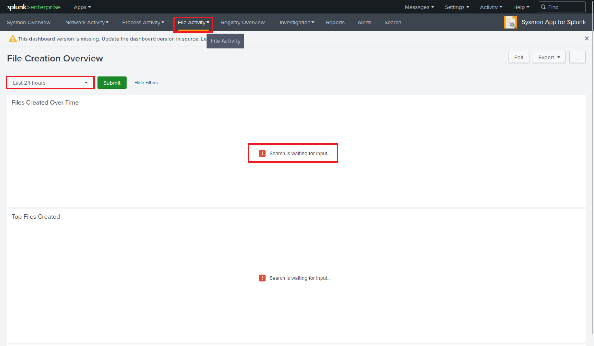
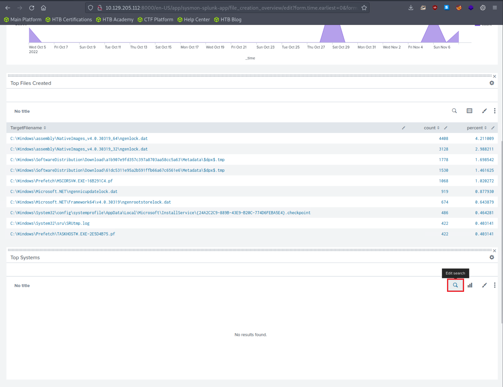
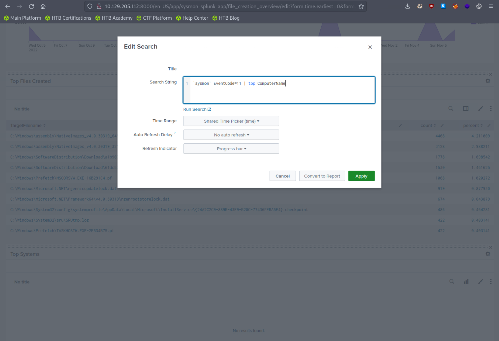
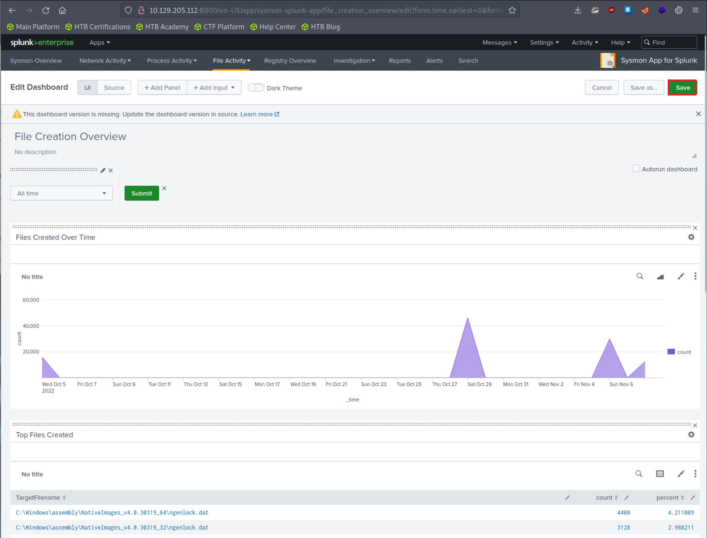
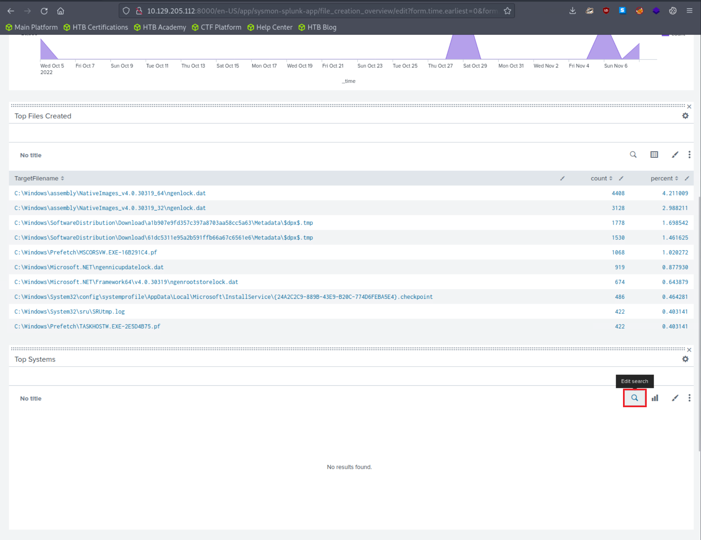
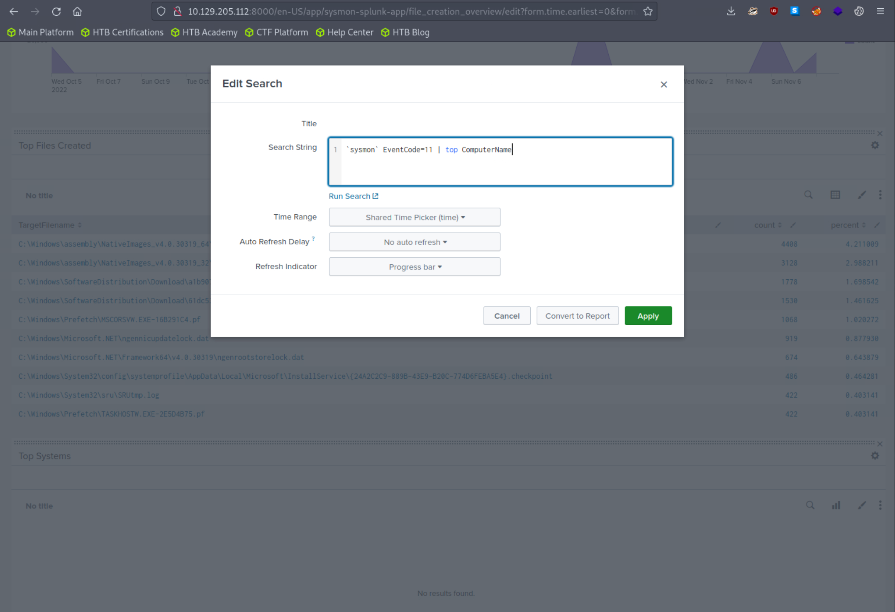
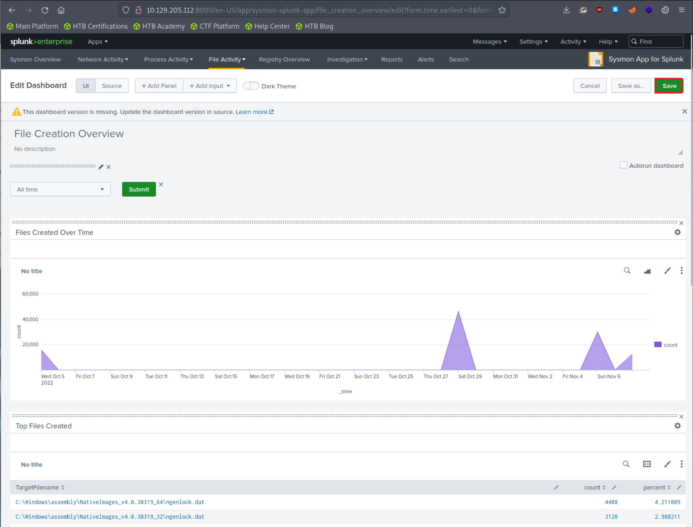

Utilizzo della Sysmon App
Accesso e Risoluzione Problemi
Accesso all'App
Per accedere alla Sysmon App for Splunk:
- Localizzala nella colonna "Apps" nella home page di Splunk
- Vai alla tab File Activity

Problema Comune
Dopo aver specificato "All time" sul time picker e cliccato "Submit", i risultati vengono generati con successo, ma nessun risultato appare nella sezione "Top Systems".
Soluzione
Per risolvere:
- Clicca su "Edit" (angolo superiore destro dello schermo)
- Modifica la ricerca
- Gli eventi Sysmon con ID 11 non contengono un campo chiamato
Computer, ma includono un campo chiamatoComputerName - Correggi questo e clicca "Apply"
 




